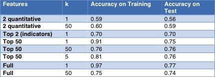
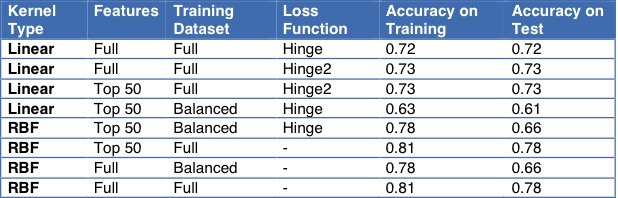

Video
Motivation and Goals
Why Water?
As we've realized the importance of access to clean water on education, income, health, and female empowerment, nonprofit and governmental organizations alike have been increasingly targeting clean water issues in developing countries. Especially in the isolated rural areas of Tanzania, communities lose out when women spend a significant fraction of their time walking miles to collect water. To alleviate this problem, the aforementioned organizations have been building water pumps.
We used a dataset from a Driven Data competition with Taarifa and the Tanzanian Ministry of Water to try to predict the status of wells like this in Tanzania. The goal of this project was to better understand which waterpoints would fail based on data about all of the wells in the country so as to improve maintenance operations for the wells and proactively improve access to water across the country.
When Water Pumps Fail
Water pumps are not without their problems. Ideally, the water pumps would remain viable for the communities it serves for forever, but like all infrastructure, water pumps are prone to break down without proper maintenance. Hence, we would like to predict the status of a well status: is it functional, and if so, does it need repairs? What features are more important to determining the success of a well?
To the best of our knowledge, while these organizations target the water shortages by building wells, not much effort is put into modeling the success of these wells and studying the data. As data scientists deeply interested in social impact and inspired by DrivenData's "Pump it Up: Data Mining the Water Table" competition, we set out to ask how we can better identify important predictors of a functional well.
Overview of Process
EDA and Visualizations
First, we performed some EDA to better understand the information that we were given.
Variables
We tried to determine whether any of the quantitative variables could serve as useful indicators for well status. We did the same for the categorical variables. We also found the pearson correlation coefficients for the feature variables to determine which most strongly correlated with the status of the wells.
Quantitative Variables

Categorical Variables
Top Pearson Correlation coefficients
Maps
We then visualized the data to see if there were any immediate connections between well status and other features. There was no immediate connection between funder and well status and the connection between quantity of water and well status was expected. However, some of the regions were strongly correlated or negatively correlated with functional well status. Specifically, the region Iringa seemed to do quite well, reinforced by the pearson correlation coefficient displayed above.

Iringa
We then took a closer look at the region Iringa. It seems to perform well because it is close to a body of water. We didn't use distance from water as one of our feature variables, but that could be an interesting add on to the project if given more time.

Modeling and Predicting
We had a few significant considerations before implementing our models. Firstly, our outcome variable had three different options: functional, functional needs repair, and non functional. Secondly, we had several features to select from. Finally, we had both quantitative and categorical predictor variables.
k-Nearest Neighbors
Overview: We started with a kNN model to see if we could accurately predict wells given their similarities to other wells.
Optimization: We worked with a feature-selected set and tried to increase our prediction ability by playing around with various values of k.
Results: Our best model was with k=5, but our accuracy was still low, so we tried Naive Bayes next.
Naive Bayes
Overview: Because we have a combination of categorical and continuous predictors, we first independently fit a Gaussian Naive Bayes model on the continuous data and a bernoulli Naive Bayes model on the categorical part.
Optimization: We removed some redundant variables because Naive Bayes does not work well with highly correlated features and bucketed our quantitative variables into categorical ones to optimize the model.
Results: The model still did not perform as well as the kNN model.
SVM
Overview: Bearing in mind that we have a large sample size, we begin SVM classification by implementing a linear SVM, explicitly passing in the standard SVM hinge loss. We choose to begin here as the kernalized SVM training time that we will attempt later scales with the sample size, and we want to quickly classify on all features as a baseline.
Optimization: We selected the most highly correlated features, balanced the set to include the same number of wells of each status group, and used a hinge squared loss function. After this showed little improvement, we implemented a RBF Kernelized SVM.
Results: The model performed about as well as the kNN model.
Random Forest
Overview: We decided to run a random forest, believing that this aggregate model could get us even higher prediction accuracies.
Optimization: We optimized on the number of trees (n_estimators), the minimum number of samples required to split a node (min_samples_split, which also affects the max depth of the tree), and maximum number of features (max_features).
Results: We got a final training accuracy of .90 and test accuracy of 0.80.
Logistic Regression
Overview: We finally ran a multiclass logistic regression since we had 3 different options for our predictions.
Optimization: We looked at both multinomial and one-vs-rest algorithms.
Results: Both performed similarly, with a test set accuracy of 0.73 or 0.74.